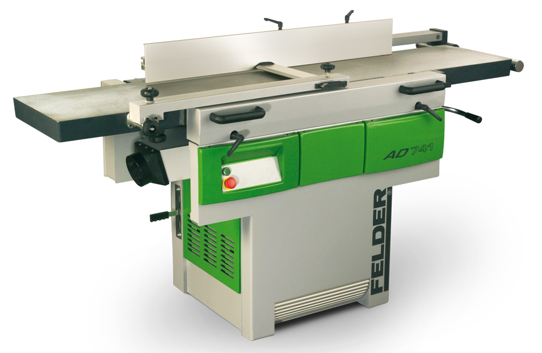
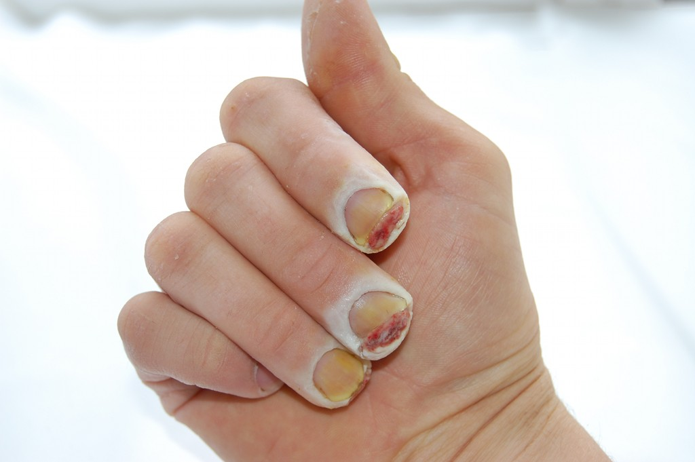
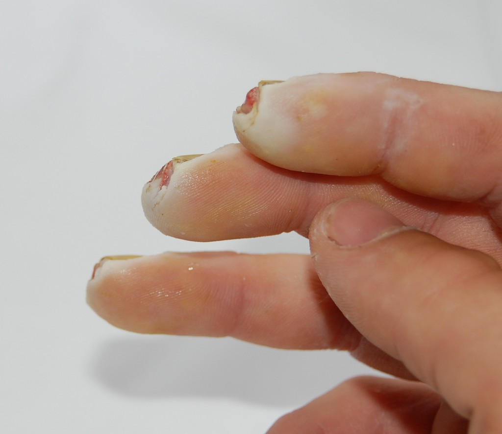
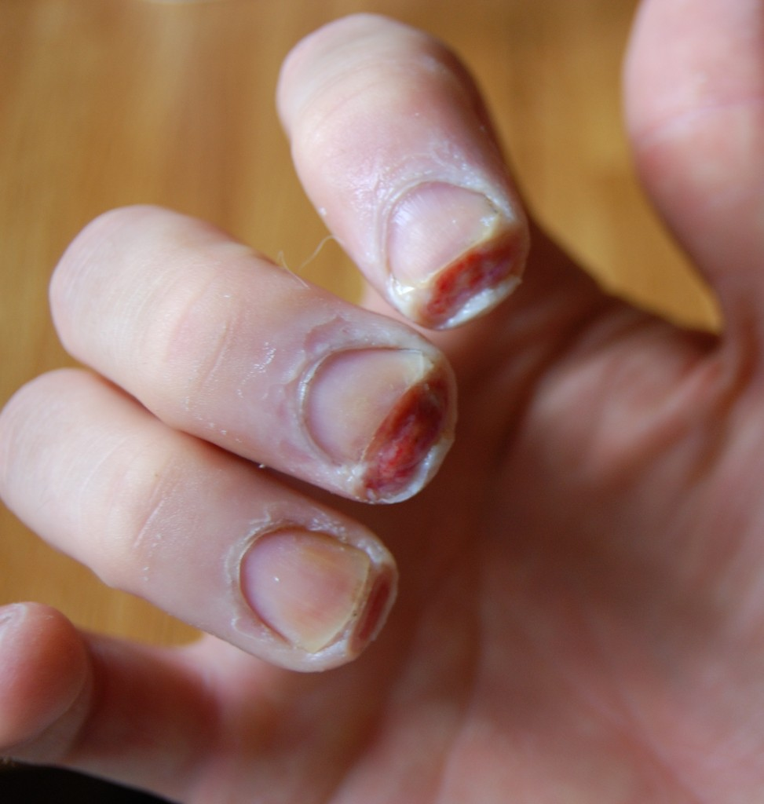
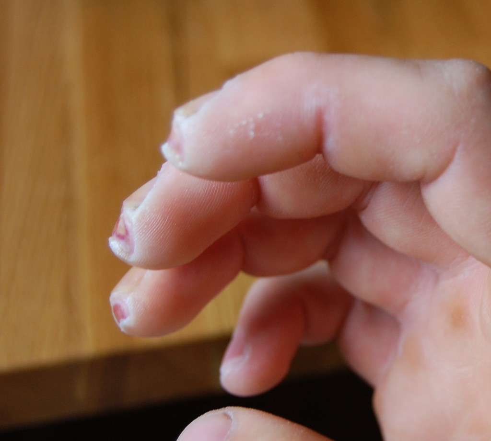
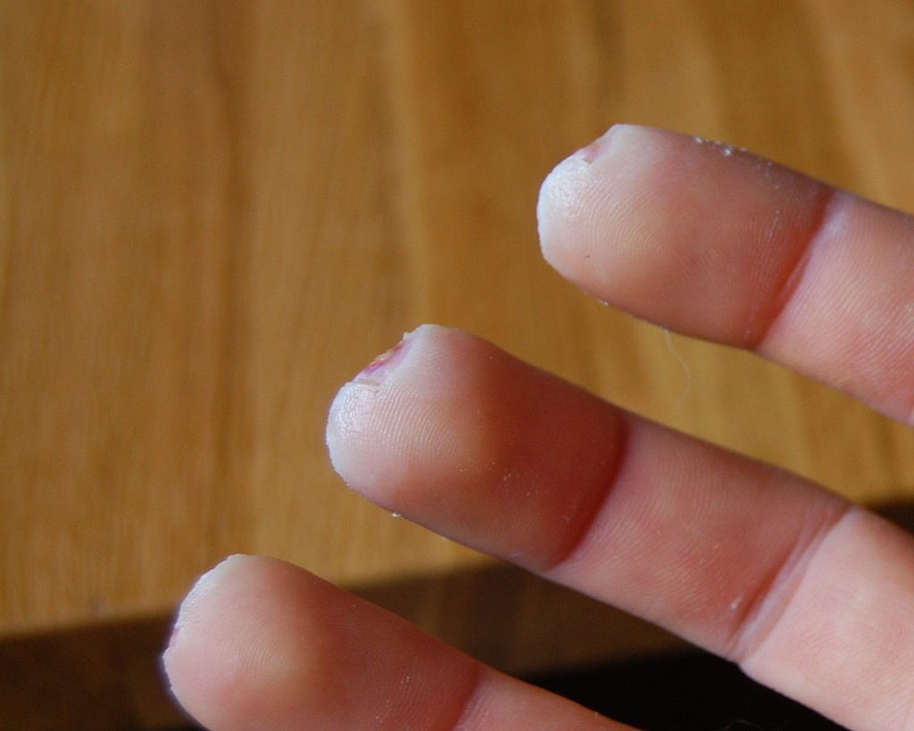
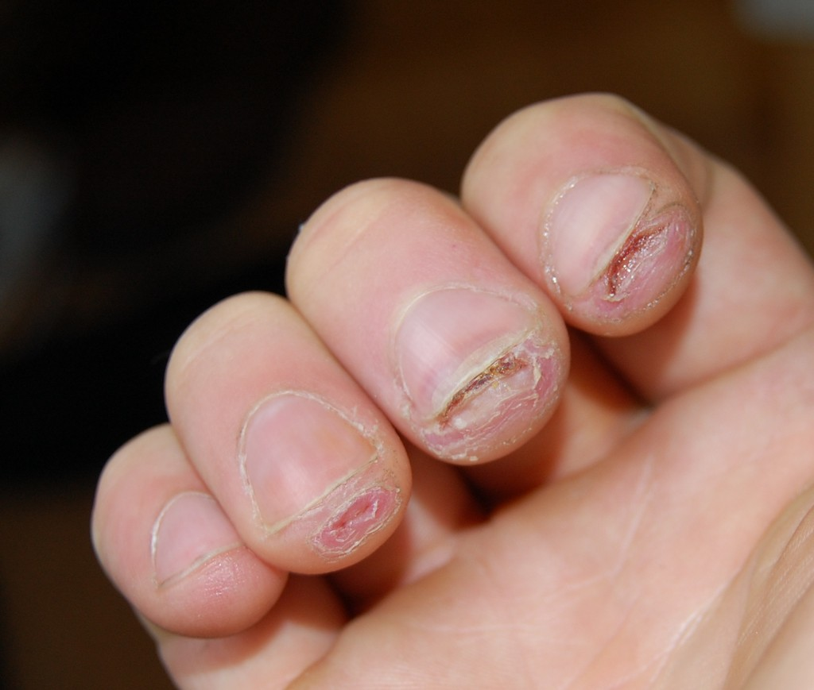
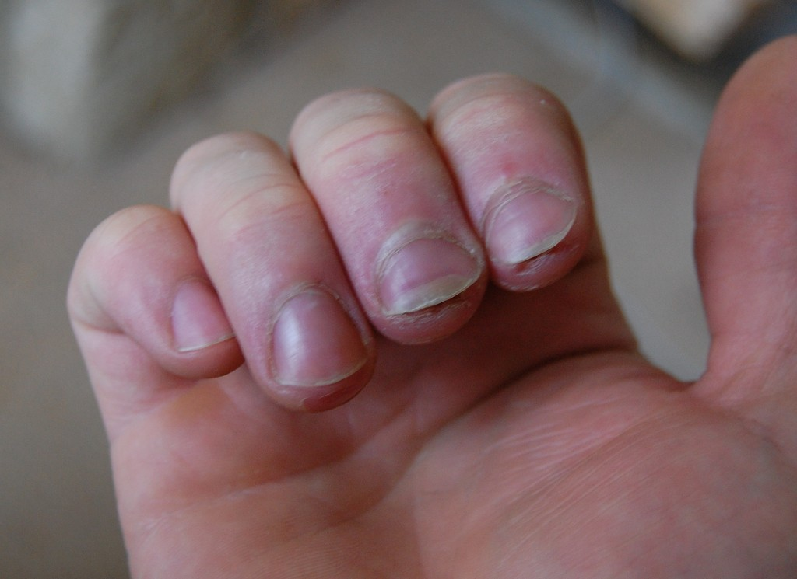
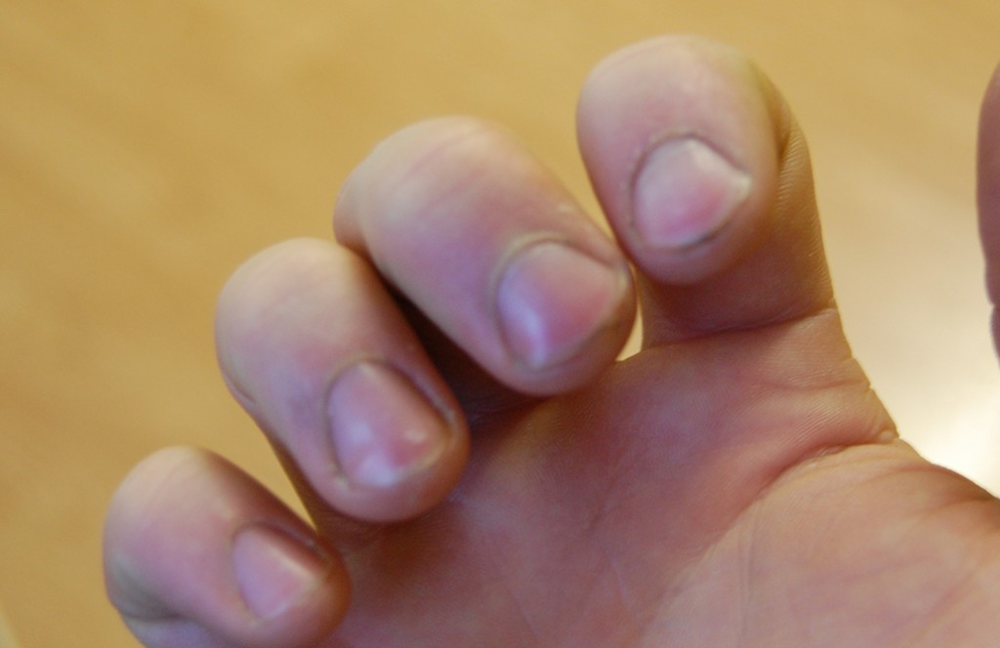

Don't put your fingers near or into running machines
This is the type of machine I was using, a Felder AD 741 planer thicknesser. A piece of wood was picked up by the moving blades, and I reflexively put my hand down to stop the wood moving away. The wood had already gone and my fingers went into the large cutter block, driven by a multi-horsepower motor. I am lucky to have not lost entire fingers or a hand.
This incident happened after 2 or so years of using the machine, on a daily basis, in a relatively safe way. I had no previous mistakes or near misses at all.
The first three pictures were taken after 9 days. The yellow staining is from the regular application of iodine.
 
The next three were taken after 11 days
  After 23 days
After 33 days
And finally after 120 days. At this stage it was still painful to drum my fingers on the table. I guess this cured my impatient streak. Nowadays (2014), I can drum my fingers again pain-free, but my fingertips are an odd shape, and the fingerprints are screwed up.
